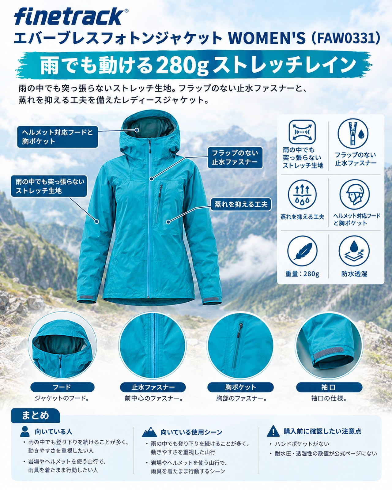

10月最後の週は、26日に広い範囲で雨の予報です。28日からは強い寒気が入り、山では冬型の冷え込みが一気に進む見込みです。週の始まりの雨の日は、気温がまだそれほど低くないぶん、レインウェアの中が汗で蒸れやすくなります。今回は「歩きやすさ」を重視したレインジャケットを紹介します。紹介するのは、ファイントラックの「エバーブレスフォトンジャケット（WOMEN'S）」（品番FAW0331）です。よく伸びる生地と、フラップのない止水ファスナーが特徴の防水透湿ジャケットで、雨の中でも登り下りを続ける日帰り山行や、岩場まじりの道を歩く女性に向いています。
基本スペック
※価格・仕様は2026年10月25日時点のファイントラック公式オンラインストアの表示です。耐水圧・透湿性の数値は公式ページに記載がないため、ここでは載せていません。
| 項目 | 内容 |
|---|---|
| 商品名 | エバーブレスフォトンジャケット（WOMEN'S） |
| 品番 | FAW0331 |
| 重量 | 280g |
| 表地 | 15デニールナイロンリップストップ |
| 裏地 | 20デニールポリエステルニット |
| 防水透湿膜 | エバーブレス®メンブレン（ポリカーボネート系ポリウレタンの多孔質膜） |
| ストレッチ性 | タテ約107%、ヨコ約117%（JIS L 1096法） |
| 収納サイズ | 幅11cm×奥行8cm×高さ18cm（スタッフバッグ付き） |
| サイズ | S・M・L |
| カラー | アクア、ライムイエロー、エナジーレッド、ディープインディゴ |
| 価格 | 41,690円（税込） |
雨の中でも突っ張らないストレッチ生地
公式ページでは、この商品を雨の中の行動を支える「ストレッチレイン」と位置づけ、生地の伸びをタテ約107%、ヨコ約117%と示しています。縫製や型紙も含めて動きやすさを追求したとされます。一部の紹介でも、伸縮性による着心地のよさが挙げられ、細身でも動きやすく、岩場で引っかかりにくいとされています。大きく足を上げる段差や、腕を伸ばしてつかまる岩場で、生地に引っぱられる感覚が少ないのは雨の日の疲れにくさにつながります。
フラップのない止水ファスナー
フロントとベンチレーションには、YKKとの協働で生まれた止水ファスナー「AquaGuard® Tightened」を採用しています。ファスナー単体で止水するためフラップがなく、もたつきのないシルエットになっています。山と溪谷オンラインの記事（メーカー協力のPR記事）でも、フラップが不要になったことで噛み込みやもたつきが減った点が紹介されています。
蒸れを抑える工夫
表地と裏地の両面に耐久撥水加工をして、生地の表面に水の膜ができるのを抑え、透湿性が長く続くようにしています。さらに、ファイントラック独自のベンチレーションシステム「リンクベント®」を備えています。暖かい雨の日に汗をかきやすい人には心強い組み合わせです。
ヘルメット対応フードと胸ポケット
フードはヘルメットに対応し、後頭部には周りの音を聞きやすくする音抜き穴があります。ポケットは胸ポケットと内ポケットが1つずつです。胸ポケットは、ザックのストラップに干渉しにくい位置にあるとされています。
デメリット・注意点
- ハンドポケットがない：ポケットは胸と内側の2つだけです。手を入れて温めたい人や、小物を腰の位置に入れたい人には物足りません。公式ストアでは、ハンドポケット付きの限定モデル「エバーブレスフォトンプラス」も扱っています。
- 耐水圧・透湿性の数値が公式ページにない：公式ページは「最高レベルの防水透湿性」と説明していますが、数値は示していません。ほかの雨具と数値で比べたい人は判断しにくい点です。
- 手入れに制約がある：ファスナーの形が変わるおそれがあるため、アイロンとタンブラー乾燥はできません。閉じたときにファスナーの形がずれたら、一度開け閉めして戻すよう案内されています。
- ベンチレーションの使い方にコツがいる：同じシリーズの旧モデルを使った人の声では、ザックを背負うとリンクベントが上向きに開いて雨風が入りやすいこと、同社の中間着と組み合わせないと機能を生かしきれないことが指摘されています。現行モデルで同じかは、店頭で確かめたい点です。
- 薄い生地は扱いに配慮が必要：同じく旧モデルについて、表地が薄くしなやかなため、強い負荷がかかる場面では注意が必要だという声があります。
向いている人・向いていない人
◎向いている人
- 雨の中でも登り下りを続けることが多く、動きやすさを重視したい人
- 岩場やヘルメットを使う山行で、雨具を着たまま行動したい人
- フラップのないすっきりした前開きが好みの人
△向いていない人
- ハンドポケットのある雨具が欲しい人
- 耐水圧などの数値を比べて雨具を選びたい人
- やぶこぎなど、生地に強い負荷がかかる使い方が多い人
まとめ
エバーブレスフォトンジャケット（WOMEN'S）は、よく伸びる生地とフラップのない止水ファスナーで、雨の中を「歩き続ける」ことを考えたレインジャケットです。ハンドポケットがないことや、防水性能の数値が公表されていない点は好みが分かれますが、280gの軽さで動きやすい雨具を探している人には有力な候補です。週の後半は一気に冷え込むため、雨具の下に着る保温着とあわせて準備を整えてください。
この記事で紹介した商品
価格・重量・在庫は各ブランド公式サイトの記載（確認日つき）にもとづきます。商品を押すと、購入先を選べます。
この記事にはアフィリエイト広告が含まれます。リンク先での購入により、当サイトが報酬を受け取る場合があります。山行の前には、最新の気象とルートの状況を必ずご確認ください。